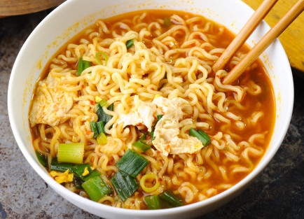
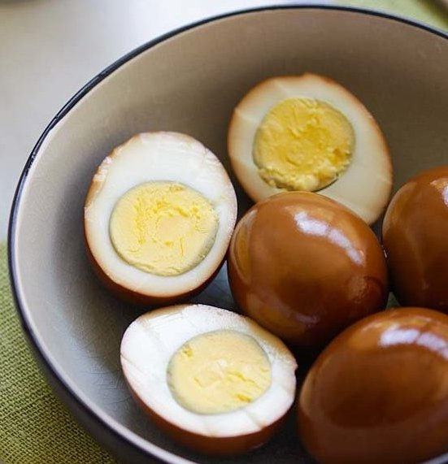

Eat Like Doris!
- Instant Ramen
- Tea Eggs
- Fried Rice
Instant Ramen

Ingredients:
- An instant ramen package of your choice
- Boiled water
- Chopped green onions
Instructions
- Boil water in a pot
- Open vegetable and soup flavoring packets and dump into boiling water
- Place ramen gently into the boiling water
- Cook for 3-5 minutes and stir gently when noodles start to soften
- Turn off fire and transfer soup and noodles into a bowl
- Garnish with green onions on top
- Enjoy with side dishes or by itself!
Tea Eggs

Ingredients:
- 6 large eggs
- 3 black tea teabags
- 1/4 cup soy sauce
- 2 star anise
- Water
- 1 tablespoon of sugar (optional)
Instructions
- Put the eggs in a pot and cover with water. Bring to a boil, and then remove pot from heat. Let stand 10 minutes, then drain water and let eggs cool.
- Gently crack the eggs with the back of a spoon, but do not peel them.
- Put cracked eggs in a single layer in a pot. Add water, teabags, soy sauce, star anise, and sugar just to cover. Bring to a boil, and then simmer on low heat for an hour. Turn eggs over if water level gets low.
- Remove pot from heat and let it cool to room temperature.
- Refrigerate until ready to eat. Leave the eggs in the liquid. When ready to eat, peel the eggs and enjoy!
Fried Rice
Ingredients:
- 2 large eggs
- Cooked meat of your choice
- Soy sauce
- Rice (at least a day-old preferred)
- Chopped green onions
Instructions
- Crack the eggs into a hot, oiled pan. Scramble eggs until halfway cooked, then transfer onto a plate.
- Put rice in pan and evenly spread out.
- Add meat to pan and stir-fry contents. After the rice and meat are warmed, add eggs back into pan and green onions.
- Add soy sauce and stir-fry until soy sauce is evenly distributed.
- When everything is cooked, transfer to a plate and enjoy!